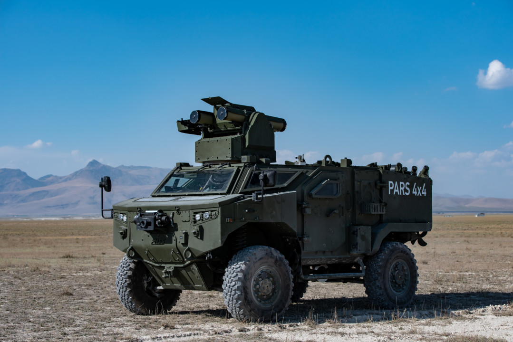
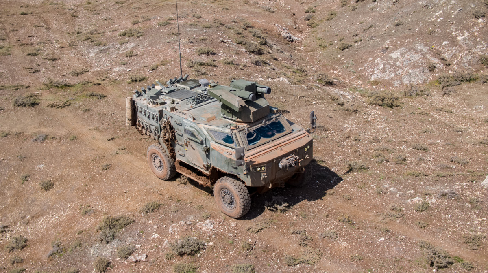
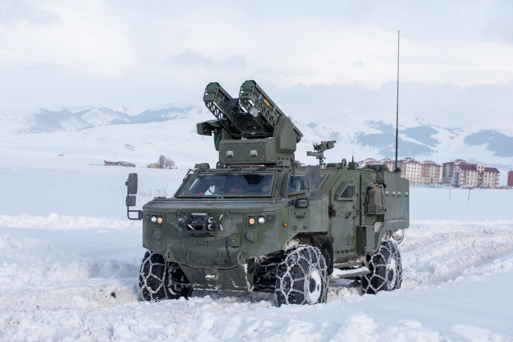

❮
❯
PARS 4x4, FNSS tarafından geliştirilen 4x4 tekerlekli zırhlı muharebe aracıdır. Araç; keşif, sensör taşıyıcı, tanksavar ve özel görev konfigürasyonları için tasarlanmış kompakt, yüksek hareket kabiliyetli bir platformdur.
FNSS kaynaklarında PARS 4x4’ün düşük siluetli gövdesi, şeffaf balistik sürücü kabini, gece-gündüz kamera sistemi ve amfibi kabiliyeti öne çıkar. Platform, merkezi lastik şişirme sistemi ve run-flat yapısı sayesinde zorlu arazi koşullarında görev yapabilecek şekilde geliştirilmiştir.
Varyantlar arasında sensör keşif aracı ile OMTAS ARC-T ve KORNET-E ARC-T entegrasyonlu tanksavar sürümleri bulunmaktadır.


